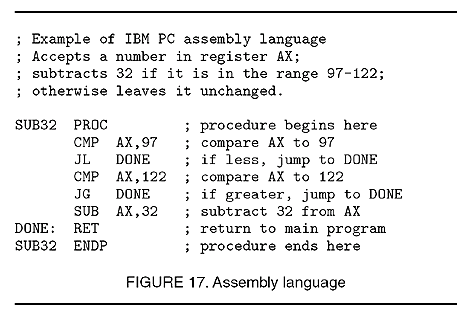
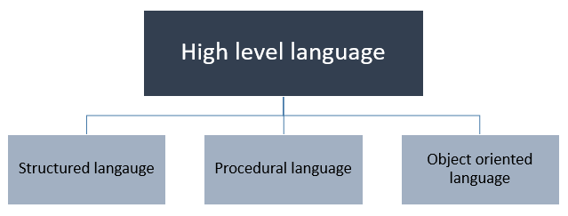
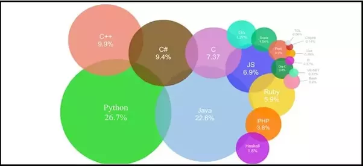
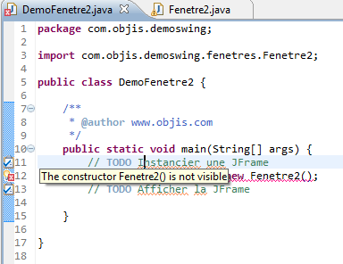
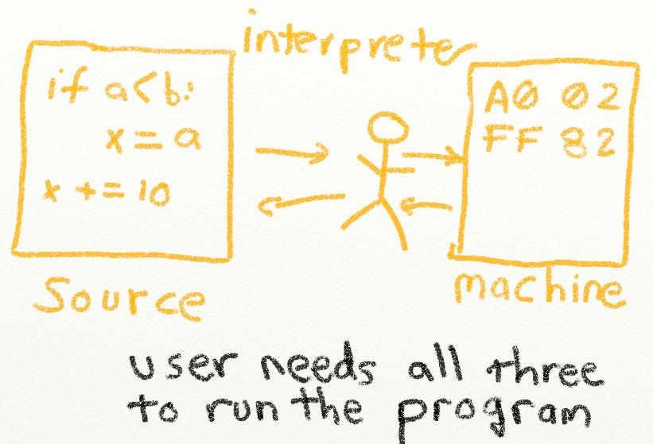
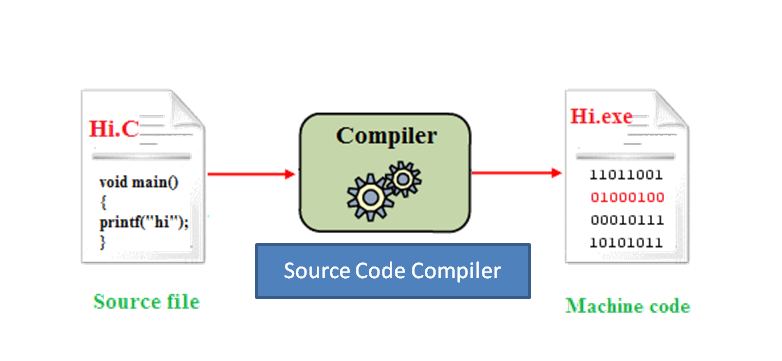

Programming 1
Edexcel College
by Enidu Batuwanthudawe C i v i l E n g . | B . S c . i n I T
. . . . . . . . . . . . . . . . . . . .. . . . . . . . . . . . . . . . . . . .
Computer programs
A computer program is a general structured collection of instruction sequences that perform a specific task when executed by a computer.
Machine Language
Machine Language
Programming language that can be directly understood and obeyed by a machine (computer) without conversion (translation). Different for each type of CPU, it is the native binary language (comprised of only two characters: 0 and 1) of the computer and is difficult to be read and understood by humans.
Assembly Language

Assembly Language
An assembly language is a low-level programming language for microprocessors and other programmable devices.
An assembly language implements a symbolic representation of the machine code needed to program a given CPU architecture. Assembly language is also known as assembly code.
High-Level Language

High-Level Language
A high-level language is a programming language designed to simplify computer programming.
High-level source code contains easy-to-read syntax that is later converted into a low-level language
Most common programming languages are considered high-level languages.
Popular High-Level Languages

Source Code

Source Code
source code is any collection of computer instructions, possibly with comments, written using a human-readable programming language, usually as plain text.
Interpreting Source Code

Interpreting Source Code
An interpreter reads one statement from the source code, translates it to the machine code or virtual machine code, and then executes it right away, as shown in the following figure. Note that a statement from the source code may be translated into several machine instructions
Compiling Source Code

Compiling Source Code
A compiler translates the entire source code into a machine-code file, and the machine-code file is then executed, as shown in the following figure.
Why Java?
Java enables users to develop and deploy applications on the Internet for servers, desktop computers, and small hand-held devices. The future of computing is being profoundly influenced by the Internet, and Java promises to remain a big part of that future. Java is the Internet programming language.
- Java is a general purpose programming language
- Java is the Internet programming language.
- Java can be used to develop standalone applications.
- Java can be used to develop applications running from a browser.
- Java can also be used to develop applications for hand-held devices.
- Java can be used to develop applications for Web servers.
Java programming
JAVA was developed by Sun Microsystems Inc in 1991, later acquired by Oracle Corporation. It was developed by James Gosling and Patrick Naughton. It is a simple programming language. Writing, compiling and debugging a program is easy in java. It helps to create modular programs and reusable code.
1) Writing of the program
2) Compilation of program
3) JVM executes the bytecode generated by compiler. This is called program run phase.
Java Virtual Machine (JVM)
- primary function of JVM is to execute the bytecode produced by compiler.
- Each operating system has different JVM,
- however the output they produce after execution of bytecode is same across all operating systems. That is why we call java as platform independent language.
bytecode
javac compiler of JDK compiles the java source code into bytecode so that it can be executed by JVM. The bytecode is saved in a .class file by compiler.
Java Development Kit(JDK)
(JDK) is a software development environment used for developing Java applications and applets. It includes the Java Runtime Environment (JRE), an interpreter/loader (java), a compiler (javac), an archiver (jar), a documentation generator (javadoc) and other tools needed in Java development
Java Runtime Environment(JRE)
(JRE) is a set of software tools for development of Java applications. It combines the Java Virtual Machine (JVM), platform core classes and supporting libraries. JRE is part of the Java Development Kit (JDK)

Main Features of JAVA
Java is a platform independent language
Compiler(javac) converts source code (.java file) to the byte code(.class file).JVM executes the bytecode produced by compiler. This byte code can run on any platform such as Windows, Linux, Mac OS etc. Which means a program that is compiled on windows can run on Linux and vice-versa. Each operating system has different JVM, however the output they produce after execution of bytecode is same across all operating systems. That is why we call java as platform independent language.
Java is an Object Oriented language
Object oriented programming is a way of organizing programs as collection of objects, each of which represents an instance of a class.
- Abstraction
- Encapsulation
- Inheritance
- Polymorphism
Simple
Java is considered as one of simple language because it does not have complex features like Operator overloading, Multiple inheritance, pointers and Explicit memory allocation.
Robust Language
robust means reliable. Java programming language is developed in a way that puts a lot of emphasis on early checking for possible errors, that’s why java compiler is able to detect errors that are not easy to detect in other programming languages. The main features of java that makes it robust are garbage collection, Exception Handling and memory allocation.
Secure
We don’t have pointers and we cannot access out of bound arrays (you get ArrayIndexOutOfBoundsException if you try to do so) in java. That’s why several security flaws like stack corruption or buffer overflow is impossible to exploit in Java.
Java is distributed
Using java programming language we can create distributed applications. RMI(Remote Method Invocation) and EJB(Enterprise Java Beans) are used for creating distributed applications in java. In simple words: The java programs can be distributed on more than one systems that are connected to each other using internet connection. Objects on one JVM (java virtual machine) can execute procedures on a remote JVM.
Multithreading
Java supports multithreading. Multithreading is a Java feature that allows concurrent execution of two or more parts of a program for maximum utilisation of CPU.
Portable
As discussed above, java code that is written on one machine can run on another machine. The platform independent byte code can be carried to any platform for execution that makes java code portable.
Main Features of JAVA
- Java is a platform independent language
- Java is an Object Oriented language
- Simple
- Robust Language
- Secure
- Java is distributed
- Multithreading
- Portable
platform independent language
The meaning of platform independent is that, the java source code can run on all operating systems. A program is written in a language which is a human readable language.
Java SE (Java Standard Edition)
Java SE (Java Standard Edition)
It is a java programming platform. It includes Java programming APIs such as java.lang, java.io, java.net, java.util, java.sql, java.math etc. It includes core topics like OOPs, String, Regex, Exception, Inner classes, Multithreading, I/O Stream, Networking, AWT, Swing, Reflection, Collection
Java EE (Java Enterprise Edition)
Java EE (Java Enterprise Edition)
It is an enterprise platform which is mainly used to develop web and enterprise applications. It is built on the top of Java SE platform. It includes topics like Servlet, JSP, Web Services, EJB, JPA
Java ME (Java Micro Edition)
Java ME (Java Micro Edition)
It is a micro platform which is mainly used to develop mobile applications.
Java Fx
JavaFx
It is used to develop rich internet applications. It uses light-weight user interface API.
Object-oriented programming (OOP)
Object-oriented programming (OOP)
is a programming paradigm based on the concept of "objects", which may contain data, in the form of fields, often known as attributes; and code, in the form of procedures, often known as methods